Частина 1 — Створення та Читання
Частина 1 — Створення та Читання
▶
Проблема зі списками
Ми вже вміємо зберігати багато даних у списках (list). Але іноді списки бувають дуже незручними. Уяви, що потрібно зберегти оцінки за шкільні предмети. Можна зробити це з допомогою двох списків:
subjects = ["Math", "English", "Art"]
grades = [95, 88, 92]
print(grades[1]) # 88 Щоб знайти оцінку з Англійської, треба вручну рахувати її індекс. Це незручно. А що, якби ми могли просто сказати комп'ютеру: "Дай мені оцінку з Англійської"? Саме для цього існують словники (dictionary).
Що таке словник?
У словнику дані зберігаються парами: ключ і значення (key: value). Це працює як справжній словник (слово → переклад) або телефонна книга (ім'я → номер телефону).
Список шукає дані за позицією (індексом), а словник – за ім'ям (ключем).
Словники створюються за допомогою фігурних дужок {}:
grades = {"Math": 95, "English": 88, "Art": 92}
print(grades["English"]) # 88Також словник можна створити порожнім, а потім наповнити:
student = {} # порожній словник
student["name"] = "Sofia"
student["age"] = 12
student["grade"] = 6
print(student)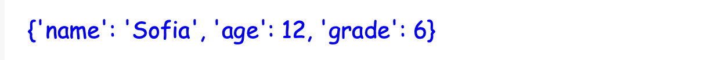
Читання даних: [] проти .get()
Щоб дістати значення зі словника, можна використати квадратні дужки з ключем:
print(student["name"]) # Виведе "Sofia"Але є проблема! Що буде, якщо ми спитаємо про ключ, якого не існує? Програма зламається з помилкою KeyError:
print(student["city"])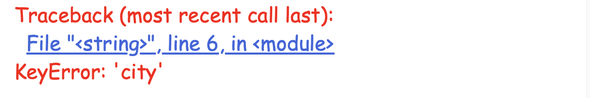
Щоб цього уникнути, використовують безпечний метод .get(). Якщо ключа немає, він поверне None , а не помилку. А ще в ньому можна задати значення за замовчуванням.
# Безпечне читання
print(student.get("age")) # 12
print(student.get("city")) # None (без помилки)
# Безпечне читання з підстраховкою
print(student.get("city", "City is unknown")) # City is unknown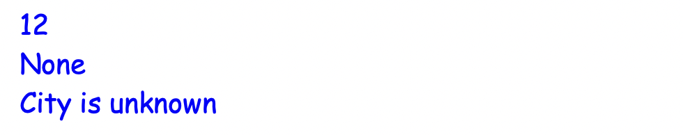
✍️ Міні-вправа: Зараз цей код видає помилку. Використай метод .get() і зроби так, щоб натомість виводився текст: "Улюбленець: Немає".
Очікування запуску...
 Практика 1
Практика 1
▶
Завдання 1.1: Мій словник (Warm-up)
Створи словник my_info, який містить інформацію про тебе. Використай ключі: name, age та hobby.
Потім використай .get(), щоб по черзі вивести на екран кожне значення.
А наостанок спробуй дістати ключ favorite_food, встановивши значення за замовчуванням "Pizza".
Завдання 1.2: Міні-перекладач (English)
Створи словник words з англійськими словами та їх перекладами:
- dragon – дракон
- wizard – чарівник
- treasure – скарб
Далі:
- Запитай у користувача англійське слово. Збережи його у змінну.
- Спробуй знайти у словнику переклад введеного слова. Якщо такого слова немає, виведи "Цього слова ще немає в словнику.".
Частина 2 — Зміна даних та Перевірки
▶
Додавання та оновлення
Словники легко змінювати. Щоб додати нову пару "ключ-значення" (або оновити існуючу), ми використовуємо квадратні дужки та знак дорівнює =.
student = {"name": "Sofia", "age": 12}
student["city"] = "Lviv" # Додає новий ключ "city"
student["age"] = 13 # Оновлює значення для існуючого ключа "age"
print(student)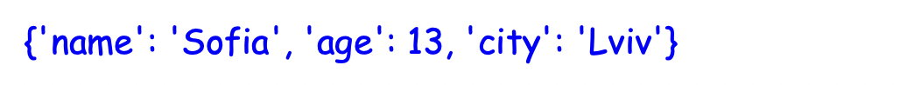
Важливо: Кожен ключ у словнику може зустрічатися лише один раз! Якщо ти спробуєш додати ключ, який вже існує, старе значення просто зітреться і заміниться на нове.
Видалення даних (del та pop)
Щоб видалити ключ зі словника, є дві команди:
1) Команда del
Команда del просто видаляє значення зі словника:
student = {"name": "Sofia", "age": 12, "city": "Lviv"}
print(student)
del student["age"]
print(student)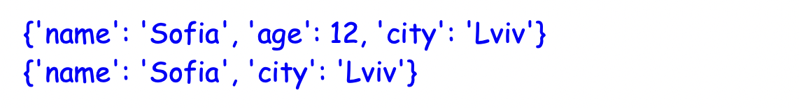
2) Метод .pop()
Метод .pop() видаляє та повертає видалене значення (тоді його можна зберегти у змінну):
student = {"name": "Sofia", "age": 12, "city": "Lviv"}
print(student)
deleted_value = student.pop("city")
print(student)
print(f"Deleted the city: {deleted_value}")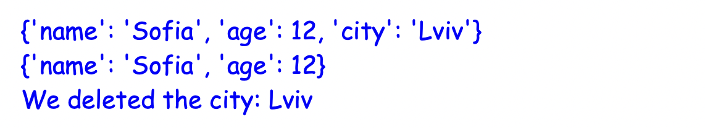
Перевірка наявності ключа (in)
Іноді потрібно дізнатися, чи взагалі існує такий ключ у словнику, перш ніж щось з ним робити. Для цього використовують умову if з оператором in:
if "name" in student:
print(student.get("name"))
else:
print("Ім'я учня невідоме.")✍️ Міні-вправа: Словник inventory зберігає дані про інвентар гравця у форматі "предмет": "кількість":
- Онови кількість яблук на 5.
- Додай в інвентар один меч (sword).
Очікування запуску...
Практика 2
▶
Завдання 2.1: Міні-книга контактів (Practical)
- Створи порожній словник contacts.
- Запитай у користувача ім'я контакту ("Введіть ім'я: ").
- Запитай номер: ("Введіть номер телефону: ").
- Додай новий запис у словник contacts.
- Надрукуй оновлену телефонну книгу.
Завдання 2.2: Інвентар (Видалення)
Дано інвентар персонажа у грі:
inventory = {
"sword": 2,
"pizza": 1,
"map": 1,
}- Гравець зʼїв піцу. Видали її зі словника за допомогою команди del.
- Гравець загубив мапу. Використай метод pop, щоб видалити її та зберегти видалене значення у змінну lost_item.
- Надрукуй оновлений інвентар та змінну lost_item.
Завдання 2.3: Бібліотека (in)
Маємо словник із книгами та їхніми кодовими номерами в бібліотеці:
books = {
"A7": "Гобіт, або Туди і звідти",
"D5": "Локвуд і Ко: Сходи, що кричать",
"M10": "Пуаро веде слідство",
}- Запитай у користувача код книги ("Введіть код книги: ").
- Перевір, чи є цей код у словнику books.
- Якщо є — виведи "Книгу [назва книги] знайдено!".
- Якщо немає — виведи "Такої книги немає!".
Частина 3 — Ключі, Значення та Списки
▶
Ключі та значення (.keys та .values)
Іноді нам не потрібен весь словник, а лише його ключі або лише значення. Для цього існують спеціальні методи:
Метод .keys()
Повертає всі ключі, які є у словнику:
student = {"name": "Sofia", "age": 12, "city": "Lviv"}
keys = student.keys()
print(keys)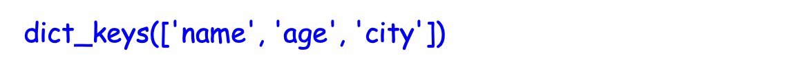
Метод .values()
Повертає всі значення зі словника:
student = {"name": "Sofia", "age": 12, "city": "Lviv"}
values = student.values()
print(values)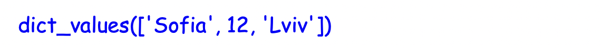
Функція list()
Ти могла помітити, що результат роботи .keys() та .values() виглядає трохи незвично (з приставкою dict_keys або dict_values). Це тому, що вони повертають не зовсім звичайні списки.
Щоб перетворити їх на справжній, звичайний список (який ми знаємо і з яким вміємо працювати), існує вбудована функція list():
student = {"name": "Sofia", "age": 12, "city": "Lviv"}
# Перетворюємо ключі на звичайний список
normal_list = list(student.keys())
print(normal_list) # ['name', 'age', 'city']
print(normal_list[1]) # age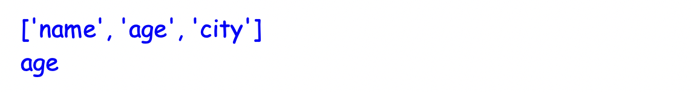
Це дуже корисно, коли, наприклад, потрібно обрати випадковий ключ зі словника за допомогою random.choice().
✍️ Міні-вправа: Заміни знаки ❓, щоб перетворити ключі словника на справжній список.
Очікування запуску...
Практика 3
▶
Завдання 3.1: Класний журнал (Math)
Маємо словник з оцінками:
marks = {
"English": 11,
"Math": 12,
"Art": 10,
"History": 9,
}Знайди і виведи:
- Суму всіх оцінок.
- Середнє арифметичне оцінок.
- Найвищу оцінку.
Корисні команди:
- sum(marks.values()) – знаходить суму всіх оцінок у словнику.
- len(marks) – знаходить кількість предметів (ключів).
- max(marks.values()) – знаходить найвищу оцінку.
Завдання 3.2: Столиці світу (Random Quiz)
Створимо вікторину! Дано словник:
capitals = {
"Україна": "Київ",
"Франція": "Париж",
"Японія": "Токіо",
"Італія": "Рим",
"Німеччина": "Берлін",
"Канада": "Оттава",
"Австралія": "Канберра",
"Єгипет": "Каїр",
}- Створи змінну random_country. Збережи в ній випадкову назву країни зі словника (random.choice(список ключів)).
- Запитай у користувача: "Яка столиця країни [random_country]?"
- Якщо введена відповідь дорівнює значенню зі словника для цієї країни — виведи "Правильно!". Інакше виведи "Неправильно!".
Завдання 3.3: Камінь-Ножиці-Папір (Game)
Словники ідеально підходять для ігрової логіки! Словник нижче показує, що кого перемагає:
beats = {
"камінь": "ножиці",
"ножиці": "папір",
"папір": "камінь"
}- Запитай у гравця його хід (player_choice).
- Комп'ютер обирає випадковий ключ зі словника (computer_choice).
- Виведи на екран, що обрав комп'ютер.
-
Логіка перемоги (
if/elif/else):
- Якщо player_choice та computer_choice однакові → "Нічия!"
- Якщо beats[❓] == ❓ → "Комп'ютер переміг!" (подумай, чим треба замінити ❓)
- Інакше → "Ти переміг!"
Частина 4 — Цикли та List vs Dict
▶
Як перебрати словник циклом for?
Якщо ми просто запустимо цикл for по словнику, він пройдеться лише по його ключах:
student = {"name": "Sofia", "age": 12}
for key in student:
print("Ключ:", key)
print("Значення:", student[key], "\n")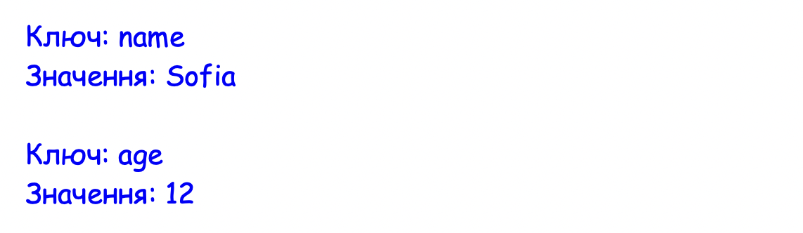
Але існує кращий спосіб. Метод .items() ("елементи") повертає одразу і ключ, і значення в парі:
student = {"name": "Sofia", "age": 12, "grade": 6}
for key, value in student.items():
print(f"{key}: {value}")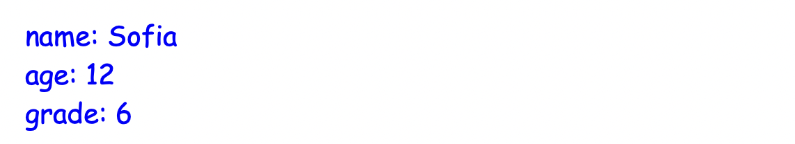
Що обрати: Список чи Словник?
У тебе може виникнути питання: коли що використовувати?
- Список (List) [] — коли тобі важливий ПОРЯДОК. Наприклад: список переможців у грі (перше місце, друге, третє), або список справ на день.
- Словник (Dict) {} — коли тобі важливе ІМ'Я (ключ). Наприклад: переклад слів (dog - собака), налаштування персонажа (energy - 100).
✍️ Міні-вправа: Заверши цикл так, щоб він вивів на екран назву та ціну кожного фрукта:
Очікування запуску...
Практика 4
▶
Завдання 4.1: Меню кафе (items)
Ось словник із цінами на напої:
menu = {"Чай": 35, "Кава": 45, "Какао": 50, "Лимонад": 25}Запусти цикл for з методом .items(), щоб красиво вивести меню на екран у такому форматі:
- Напій: Чай — 35 грн
- Напій: Кава — 45 грн
- ...і так далі.
Завдання 4.2: Хто здав тест? (Фільтрація)
Маємо словник з балами учнів за тест (максимум 12):
scores = {"Анна": 11, "Максим": 7, "Олег": 10, "Яна": 12, "Денис": 5}Тест вважається успішно складеним, якщо бал більший або дорівнює 9.
Запусти цикл for. Всередині циклу перевір:
- Якщо бал >= 9, виведи "[Ім'я] склав(ла) тест на [Бал]!".
- Інакше, виведи "[Ім'я] має пройти тест ще раз.".